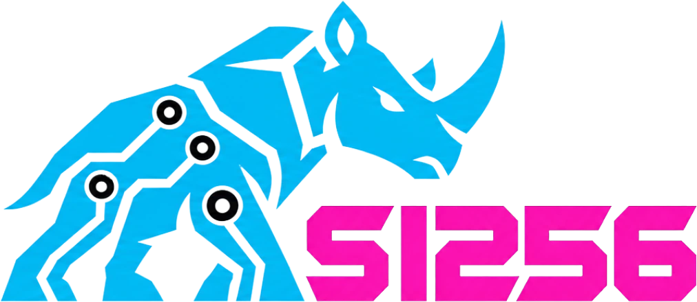

Recall
A trained memory turns a pile of facts into a map you can walk through. We back anyone who rehearses until the order never slips.
SI256 lives on Solana and speaks to anyone who trains recall like an athlete and chases patterns like a detective. Every figure that moves on this page is read live from a public endpoint, nothing is typed in by hand.

A short list of habits that separate sharp thinkers from busy ones.
A trained memory turns a pile of facts into a map you can walk through. We back anyone who rehearses until the order never slips.
One exact answer beats ten loose ones. Clean inputs, careful checks, nothing rounded in your favour.
Structure hides inside noise. Spotting it early is the quiet skill behind most good decisions.
Skill comes from small daily reps, repeated for years. No shortcuts get announced, they just get practised.
Tools change fast. We keep one eye on the edge and build toward it in public view.
Fast confirmation and tiny fees, so the token feels as quick as the minds around it.
Chain height and market numbers come from open endpoints. If a source goes quiet, the tile shows a dash, not a guess.
The brand borrows its discipline from athletes who compete on recall, focus and mental stamina.
The contract address will sit at the very peak of this page the moment it is announced. Until then the slot stays honestly empty.
A source link will switch on here once the code is public. Nothing is faked in the meantime.
Updates land on X first. Follow along, ask hard questions, bring your own methods.
Attention is the scarce resource of this decade. Anyone able to hold more, sort faster and decide cleaner have an edge, and they tend to find each other.
SI256 gives that crowd a shared banner on Solana: a place to follow, a symbol to rally around, and a feed that tells the truth about its own numbers.
Chain height refreshes every two seconds. Market data refreshes every thirty. Failures back off and retry on their own.
No contract address is published yet, so pairs are matched by name alone and cannot be verified. Treat lookalikes with caution.